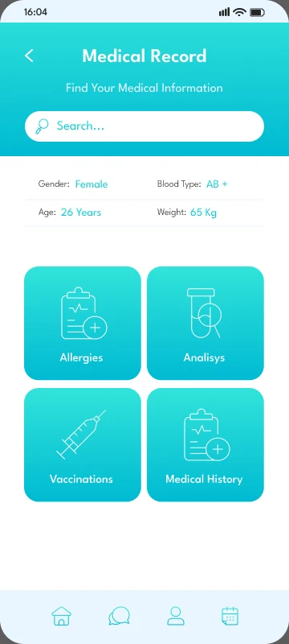

Find care
Explore specialties, doctor lists, profiles and favorites.
A Flutter healthcare showcase connecting specialty discovery, doctor appointments, scheduling and medical records.



Screens from the app experienceTranslated a Figma Community healthcare UI system into reusable Flutter screens, connected product journeys and a replaceable repository/data-source boundary.
Explore specialties, doctor lists, profiles and favorites.
Choose a date and time, review payment screens and appointment details.
Manage appointment states and add records within the demo session.
Screens use HealthRepository and HealthDataSource boundaries; the current adapter uses local session data with simulated latency.
Regression coverage includes Favorites → Back → Home when there is no Navigator pop history.
Shared widgets support repeated specialty layouts while a route catalog test preserves the intended screen coverage.
Scroll to explore. Select a screen to open the full view.
The public repository provides implementation and engineering evidence. Project information reviewed October 6, 2026.